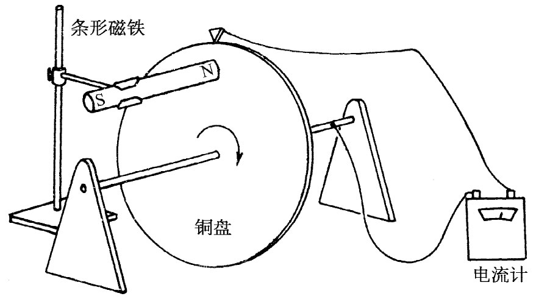
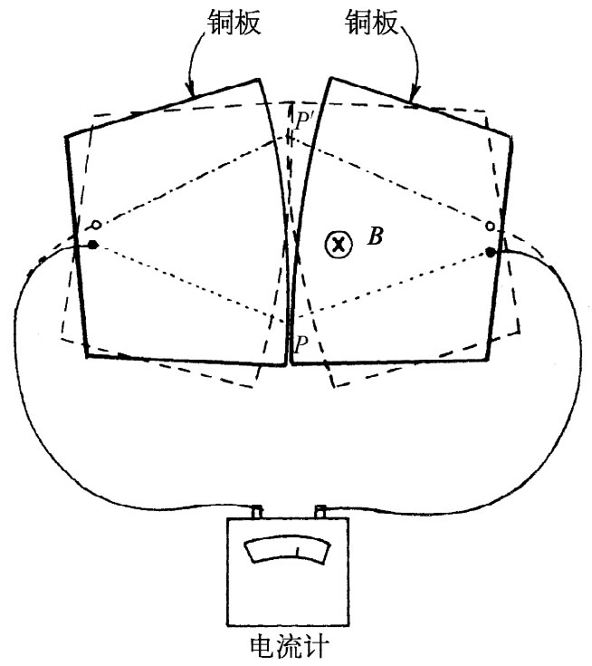

现在我们将举一些例子，其中部分起源于法拉第。这些例子表明，清楚地记住导致感生电动势的两种效应之间的差别是十分重要的。下述例子将包括“通量法则”不能够应用的一些情况——或者由于根本没有导线，或者由于感生电流所取的路径 在一导体的扩展体积内运动。
作为开始，我们指出如下一个要点：来自E场的那部分电动势并不依赖于实体导线（如v×B那部分所要有的实体导线那样）的存在。E场可以存在在自由空间中，而它环绕任一固定在空间中的想象曲线的积分就等于穿过该曲线的B通量的变化率（注意，这与由静止电荷所产生的E场完全不同，因为在那种情况下E绕一闭合回路的线积分永远为零）。
现在我们将描述一种情况，其中穿过电路的通量没有改变，但仍然存在电动势。图17-2表示一个可以在磁场存在的情况下绕一固定轴旋转的导电盘，其一个接触点装在轴上，而另一个接触点则与该盘的外缘相擦，通过电流计使该电路闭合。当盘旋转时，该电路——意思就是在空间中有电流经过的那些地方——总是一样。但在盘中的那部分“电路”是在运动着的材料里。尽管穿过该“电路”的磁通量固定不变，但仍然有一电动势，可以由电流计的偏转观察到。很清楚，这里的情况就是转动盘中的v×B力产生了电动势，但它却不能被等同于通量的变化。
|  |  |
| 图17-2 当金属盘旋转时，有一个来自v×B的电动势，但在被包围的通量中却没有什么变化 | 图17-3 当两板在一匀强磁场中辗转而过时，可以有巨大的磁通量链变化，但却没有电动势产生 |
现在作为一个相反例子，我们将考虑一种稍微有点异常的情况，即在其中穿过“电路”（又是指在有电流通过的那些地方）的磁通量发生了变化，但却没有 什么电动势。设想两块边缘稍微弯曲的金属板，如图17-3所示，这两块板被放在与其平面垂直的匀强磁场中。每一块板连接到电流计的一端，如图所示。两板在P点相接触，因而构成了一个闭合电路。如果现在两板辗转过一个小小角度，接触点将转移至P′。如果设想该“电路”沿图中所示的那条虚线经两板而形成，则当两板往复辗转时，穿过这一电路的磁通量变化就很大。然而这种转动却可由微小运动来完成，以致v×B很小，实际上不存在电动势。“通量法则”在此不适用，它必须应用于其中电路材料 保持相同的那些电路。当电路的材料正在变化时，就必须回到基本定律中去。正确 的物理意义总是由这两个基本定律
给出的。